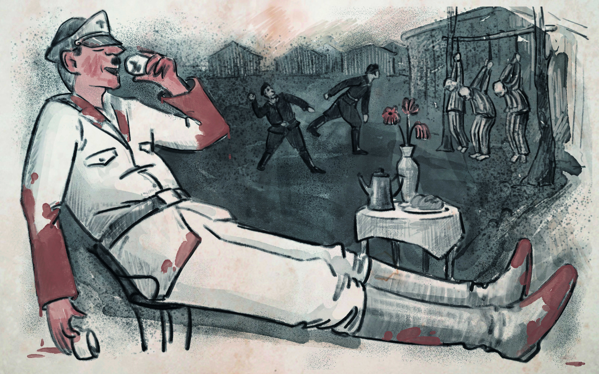
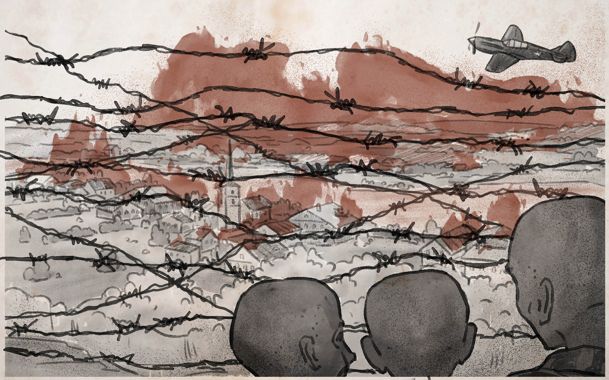

Spark of Life
Costume plates for a stage piece about the first breath of a story.
| Title | «Искра жизни» — роман Эриха Марии Ремарка (1952). |
|---|---|
| Year | 1952 |
| Field | Costume / stage |
| Description | В аду концлагеря, где эсэсовцы издеваются над заключёнными, отнимая у них имя, достоинство и надежду, люди цепляются за последнее, что у них осталось, — за искру жизни. |

 1.jpg |  2.jpg 2.jpg |
 3.jpg 3.jpg |  4.jpg |